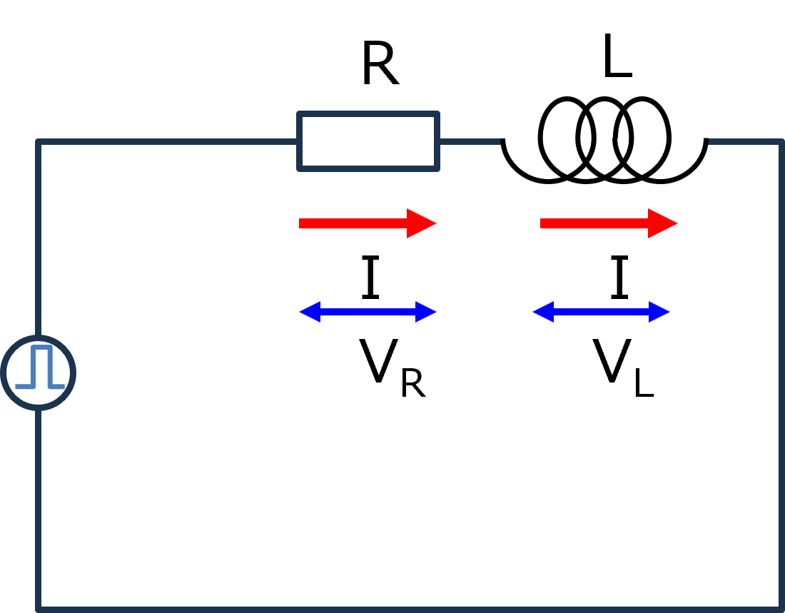
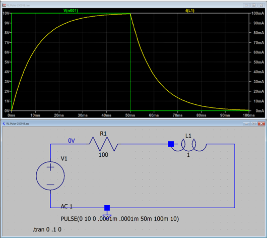
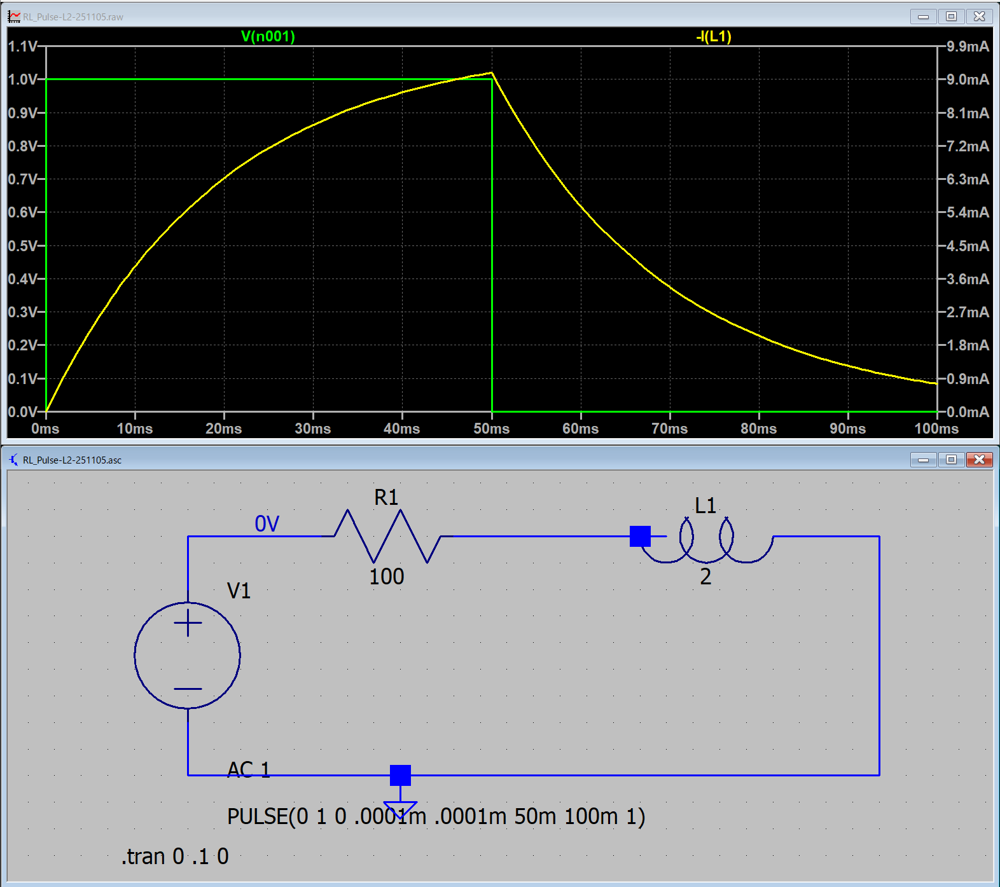

１４－２．ステップ関数（RL回路）
このページからは，入力が正弦波ではなくステップ関数の場合の応答を調べていきます．
次は，抵抗，コイルが直列の回路について

入力はステップ関数となるので，
\(\Large V(t) \ : \ V_0 \ ( 0 \leq t \leq t_0) \)
\(\Large \hspace{35 pt} : \ 0 \ (t_0 < t) \)
となります．
直列なので，
電流はどこも同じ
電圧は，抵抗+コンデンサ，が電源と等しい
ことから，
\(\Large V_0 = V_R (t) + V_C (t) \)
\(\Large V_R(t) = R \cdot I(t) \)
\(\Large \displaystyle V_L(t) = L \ \frac{d}{dt} I(t) \)
\(\Large \displaystyle V_0 = R \cdot I(t) + L \ \frac{d}{dt} I(t) \)
\(\Large \displaystyle \frac{d}{dt} I (t) = - \frac{R}{L} I (t) + \frac{1}{L} \ V_0 \)
なる，微分方程式を解けばいいことになります．
\(\Large 0 \leq t \leq t_0 \)
\(\Large \displaystyle \frac{d}{dt} I (t) = - \frac{R}{L} I (t) + \frac{1}{L} \ V_0 \)
定数変化法を使って，
\(\Large \displaystyle I(t) = A_0 \cdot exp \left( - \frac{R}{L} \ t \right) \)
\(\Large \displaystyle \frac{d}{dt} I (t) = A_0' \cdot exp \left( - \frac{R}{L} \ t \right) \color{blue}{- \frac{R}{L} \cdot A_0 \cdot exp \left( - \frac{R}{L} \ t \right)} = \color{blue}{- \frac{R}{L} I (t)} + \frac{1}{L} \ V_0 \)
\(\Large \displaystyle A_0' \cdot exp \left( - \frac{R}{L} \ t \right) = \frac{1}{L} \ V_0 \)
\(\Large \displaystyle A_0' = \frac{1}{L} \ V_0 \cdot exp \left( \frac{R}{L} \ t \right) \)
\(\Large \displaystyle A_0 =\frac{L} {R}\frac{1}{L} \ V_0 \cdot exp \left( \frac{R}{L} \ t \right) + D=\frac{1} {R} \ V_0 \cdot exp \left( \frac{R}{L} \ t \right) + D \)
\(\Large \displaystyle I(t) = \left\{ \frac{1} {R} \ V_0 \cdot exp \left( \frac{R}{L} \ t \right) + D \right\} \cdot exp \left( - \frac{R}{L} \ t \right) \)
\(\Large \displaystyle = \frac{1} {R} \ V_0 + D \cdot exp \left( - \frac{R}{L} \ t \right) \)
t=0 : I(0) = 0,
\(\Large \displaystyle 0 = I(0) = \frac{1} {R} \ V_0 + D \)
\(\Large \displaystyle D = - \frac{1} {R} \ V_0 \)
\(\Large \displaystyle I(t) = \frac{V_0} {R} \ \left\{ 1 - exp \left( - \frac{R}{L} \ t \right) \right\} \)
\(\Large t_0 < t\)
t0以降（ステップ電圧が０になってから）は，t0からの関数を考えると，t=t0においては，
\(\Large \displaystyle I(t_0) = \frac{V_0} {R} \ \left\{ 1 - exp \left( - \frac{R}{L} \ t_0 \right) \right\} \)
t0以降では，電圧が０なので，
\(\Large \displaystyle R \cdot I(t - t_0) + L \ \frac{d}{dt} I(t-t_0) = 0\)
ここで，
\(\Large \displaystyle T \equiv t - t_0 \rightarrow dT = dt \)
\(\Large \displaystyle R \cdot I(T) + L \ \frac{d}{dT} I(T) = 0 \)
\(\Large \displaystyle I(T) = A_0 \cdot exp \left( - \frac{R}{L} \ T \right) \)
\(\Large \displaystyle = I(t_0) \cdot exp \left( - \frac{R}{L} \ T \right) \)
\(\Large \displaystyle = \frac{V_0} {R} \ \left\{ 1 - exp \left( - \frac{R}{L} \ t_0 \right) \right\} \cdot exp \left( - \frac{R}{L} \ T \right) \)
\(\Large \displaystyle I(t-t_0) = \frac{V_0} {R} \ \left\{ 1 - exp \left( - \frac{R}{L} \ t_0 \right) \right\} \cdot exp \left( - \frac{R}{L} \ (t-t_0) \right) \)
t0が十分長ければ，
\(\Large \displaystyle I(t-t_0) \sim \frac{V_0} {R} \cdot exp \left( - \frac{R}{L} \ (t-t_0) \right) \)
となります．
実際にCLステップ回路を作ってみてシミュレートしてみました．
条件は，
V0 = 10 V
R = 100 Ω
L = 1 H
t0 = 50 ms
の場合，

となり，この条件ではステップ電圧の間に十分に電流が一定となっています．
電流は，
\(\Large \displaystyle \frac{V_0}{R} = \frac{10}{100} = 10 \ mA \)
時定数は，
\(\Large \displaystyle \frac{L}{R} = \frac{1}{100} = 10 \ ms \)
となります．
次に中途半端な減衰の場合，
条件は，
V0 = 1 V
R = 100 Ω
L = 2 H
t0 = 50 ms
の場合，

電流は，
\(\Large \displaystyle I(t_0) = \frac{V_0} {R} \ \left\{ 1 - exp \left( - \frac{R}{L} \ t_0 \right) \right\} = \frac{1} {100} \ \left\{ 1 - exp \left( - \frac{100}{2} \times 0.05 \right) \right\} \)
\(\Large \displaystyle = 0.00918 A = 9.18 \ mA\)
時定数は，
\(\Large \displaystyle \frac{L}{R} = \frac{2}{100} = 20 \ ms \)
となります．
次は，同様のＲＣ回路を，電荷，ｑ，から考えてみます．です．